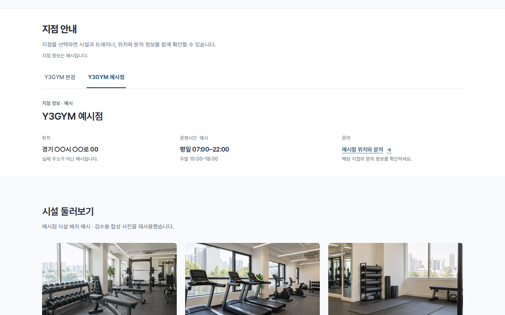
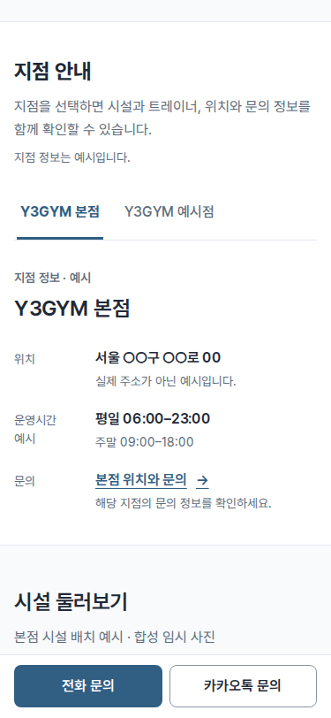
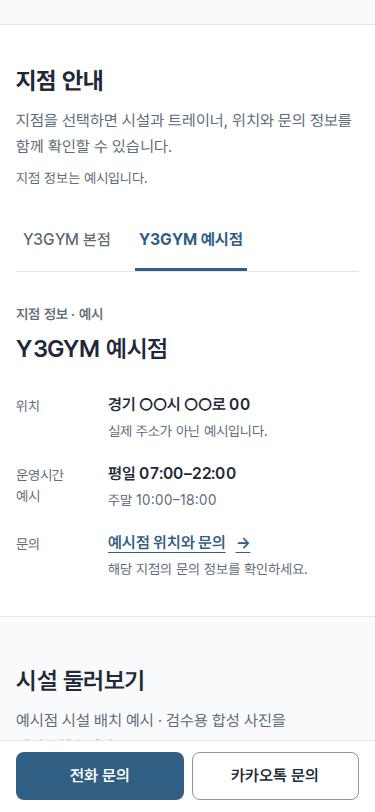

지점 정보를 한 탭에 모았습니다.
지점을 선택하면 요약·시설·트레이너·위치와 문의가 함께 바뀝니다. 브랜드 소개와 소식은 공통으로 유지합니다. 기본 예시는 본점·예시점 두 지점이며 자료는 모두 임시 예시입니다.
이 탭 배치는 “배치 합격”으로 사용자 확인을 받았습니다. 아래 캡처는 승인 당시의 이력입니다. 후속 요청에 따라 트레이너·위치 상세를 별도 페이지로 옮겼습니다.
PC · 지점 선택



모바일 · 지점 선택




홈 전체와 검사
- 본점 선택 전체: PC · 모바일
- 예시점 선택 전체: PC · 모바일
- 홈 첫 화면: PC · 모바일
- 6개 화면 폭 검사 · 지점 전환·추가 데이터·연결 동선 검사


지점 수는 데이터 목록을 따릅니다. 지점이 많으면 탭 줄을 가로로 스크롤하고, 키보드로도 선택할 수 있습니다. JavaScript가 동작하지 않으면 모든 지점 정보와 기본 링크를 제공합니다. 실제 지점 등록·관리 서비스는 아직 연결하지 않았습니다.